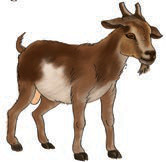
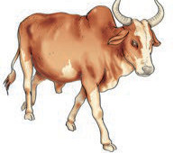

I imitate different sounds.
Animal sounds or names of animal sounds
Activity 1
1.
Name the animals in the following pictures.
After naming them, imitate their sounds. Or sign the names of their sounds.
(a)

(b)

(c)

(d)

(e)

(f)

2.
Sing or sign the song about animal sounds.
The cow on the farm says moo, moo, moo
The cock on the farm says cock a doodle doo
The cat on the farm says meow, meow, meow
Moo, cock a doodle doo, meow
The duck on the farm says quack quack quack
The sheep on the farm says baa, baa, baa
The dog on the farm says woof, woof, woof
Quack, baa, woof
3.
Imitate the animal sounds from the song above. Or sign the names of the animal sounds from the song above.